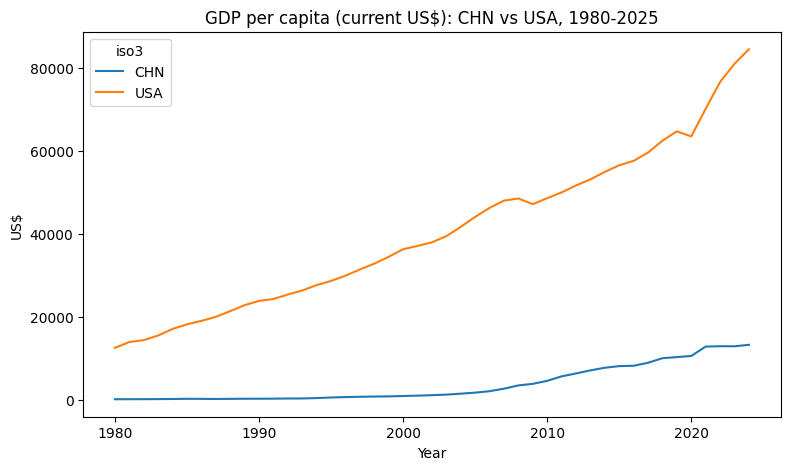

import pandas as pd
import os
os.chdir(r"D:\Github_lianxh\ds\body") # 工作路径8 数据获取和读入
8.1 数据来源
8.1.1 数据科学平台和搜索引擎
- KDNuggets - datasets
- 数据科学和机器学习领域的知名网站，提供了大量的资源和信息。
- Kaggle Datasets
- 全球知名的数据科学与机器学习社区，用户可以在平台上获取数据集、参与竞赛、分享与学习代码、交流讨论。
- Mendeley Data
- 一个开放的数据集存储库，用户可以上传和分享数据集。诸多学术期刊的作者在此分享他们的数据集。
- UCI Machine Learning Repository
- 机器学习领域最经典的数据集仓库，涵盖分类、回归、聚类等多种任务，适合教学和算法测试。
- Google Dataset Search
- 谷歌推出的专用数据集搜索引擎，聚合全球各类开放数据集，支持多语言检索，便于快速定位所需数据。
- AWS Public Datasets
- 亚马逊云平台提供的开放数据集，涵盖气象、基因组、卫星影像等大规模数据，适合云端分析和机器学习。
- Microsoft Azure Open Datasets
- 微软云平台提供的开放数据集，聚焦天气、健康、金融等领域，便于在 Azure 上直接调用和分析。
- Open Data Portal by European Union
- 欧盟官方开放数据门户，收录成员国及欧盟机构的各类统计、经济、社会等数据，支持多语种访问。
- World Bank Open Data
- 世界银行开放数据平台，提供全球各国经济、社会、发展等宏观数据，适合国际比较和经济研究。
- Data.gov
- 美国政府开放数据平台，涵盖农业、气候、教育、能源等众多领域，数据权威且更新及时。
- awesome-public-datasets
- GitHub 开放数据集列表
- openecon.ai
- Query economic data from FRED, World Bank, IMF, and 10+ sources using plain English. MCP server + web app + API.
- OSF
- OSF 是 Open Science Framework 的缩写，是一个开放科学平台，研究人员可以在上面存储、分享和管理他们的研究数据、代码、文档和其他相关材料。
8.1.2 国内数据平台
8.1.3 学校图书馆
- CSMAR (国泰安数据库-公司金融-股票-债券):
- EPS数据平台
- Wind资讯金融终端
- 中经网产业数据
- 登录方式：点击【登陆】按钮下方的【
中山大学集団用户快捷入口】(无需账号密码) - 国内宏观层面的数据基本上都能够找到。Excel → Python/Stata
- 例：宏观数据
- 登录方式：点击【登陆】按钮下方的【
- 中经网统计数据库
- EMIS—Emerging Markets Information Service（新兴市场动态及商务信息数据库）
- 新闻，股指，最新统计数据等
- China - Financial markest
RESSET系列数据库
- RESSET系列数据库 | RESSET企业大数据平台
- 需要输入账号和密码
- 1、中山大学校园网IP范围内，直接点击访问。
- 2、官方网站访问： http://www.resset.cn，点击页面“快速登录”右边的“企业大数据平台”链接后输入对应的用户名及密码进行登录。用户名：sysu和密码：sysu1903。
- 3、校外不限IP访问，通过CARSI平台访问登陆，访问地址：http://db.resset.com/，点击页面的：CARIS 平台登陆，选择学校，然后输入验证身份信息后登陆使用。
8.1.4 公开数据
- 全球数据
- 连小白, 2025, GMD：最新全球宏观数据库-243个国家46个宏观变量, 连享会 No.1559.
- 各国、各级政府的统计局：
- 国际国内各类组织机构
8.1.5 相关推文
- 冷萱, 2021, 清洗CFPS：两步搞定中国家庭追踪调查数据清洗.
- 吕卓阳, 2025, FinanceDatabase：涵盖30万条全球金融数据的平台.
- 吴浩然, 2024, 数据爬取：美国证监会EDGAR系统数据获取及Python实现.
- 周豪波, 2020, Python 调用 API 爬取百度 POI 数据小贴士——坐标转换、数据清洗与 ArcGIS 可视化.
- 宋森安, 2022, CHARLS-中国健康与养老调查数据库清洗（二）.
- 张祖冲, 2025, akshare 与 Python：中国金融数据分析与获取的开源首选工具.
- 李珊珊, 2023, CGSS：中国综合社会调查数据清洗.
- 李珊珊, 2023, CLHLS：中国老年健康影响因素跟踪调查数据清洗.
- 李青塬, 2022, Stata：如何调用联邦储备经济数据(FRED)-freduse.
- 桑倩倩, 2022, 美国社会-人口数据平台-Opportunity-Insights：由Chetty发起.
- 申维冰, 2022, 金融数据哪里找——Akshare数据平台.
- 申维冰, 2021, 金融数据哪里找：Tushare数据平台.
- 罗丹, 2025, 提示词！提示词！数据清洗、数据分析、可视化一网打尽.
- 肖蕊, 2021, 知乎热议：经济-金融大佬从哪里获得数据？如何处理？.
- 连享会, 2021, Stata公开课：微观数据库清理经验分享.
- 连享会, 2025, 连享会-系列公开课（共五次）.
- 连享会, 2020, 连享会直播：Stata 数据清洗之实战操作.
- 连小白, 2025, Kaggle-数据科学平台：找数据、搜代码一网打尽.
8.2 读取数据
8.2.1 列表和数据框
Python 提供了多种数据结构来存储和处理数据，其中最常用的是列表（list）和数据框（DataFrame）。列表是一个有序的元素集合，而数据框是一个二维的表格数据结构，类似于电子表格或数据库表。
如果我们的原始数据是 .csv, xlsx 或 .txt 文件，我们可以使用 pandas 库的 read_csv()、read_excel() 或 read_table() 函数。
8.2.2 读取 CSV 文件
CSV 文件（Comma-Separated Values）是一种常见的文本文件格式，存储的数据通常满足「清洁数据」的要求，即每一行代表一条记录，每一列代表一个字段。
有些 CSV 文件可能包含标题行（header），即第一行是列名，而有些则没有。我们可以通过 pandas 库的 read_csv() 函数来读取这些文件，并指定是否包含标题行。
如下是几个典型的 CSV 文件存储结构示例
- 结构 1：没有标题行
- 结构 2：首行为变量名
- 结构 3：首行为变量名，第二行取值单位
- 结构 4：首行为变量名，第二行取值单位，第三行为注释
上述结构可以统一为一种结构，即任何 CSV 文件都可以分为 head （标题行）和 body（数据行）两部分。head 部分包含列名和其他元数据，body 部分包含实际的数据。使用 pandas 库的 read_csv() 函数时，我们可以通过参数来指定是否包含标题行，以及如何处理其他元数据。
read_csv() 函数的常用输入项和设定包括：
filepath_or_buffer：文件路径或对象，指定要读取的 CSV 文件。sep：分隔符，默认为逗号（,），可以指定其他分隔符，如制表符（\t）。header：指定标题行的位置，默认为 0（第一行），可以设置为 None 表示没有标题行。
names：指定列名列表，如果文件没有标题行，可以通过此参数提供列名。index_col：指定哪一列作为行索引，默认为 None。usecols：指定要读取的列，可以是列名列表或列索引列表。dtype：指定列的数据类型，可以是字典形式，键为列名，值为数据类型。skiprows：跳过前几行，常用于跳过注释或元数据行。nrows：指定读取的行数，常用于只读取部分数据。na_values：指定哪些值应被视为缺失值。parse_dates：指定哪些列应解析为日期类型。encoding：指定文件的编码格式，常用的有 ‘utf-8’、‘latin1’ 等。engine：指定解析引擎，默认为 ‘c’，可以设置为 ‘python’ 以使用 Python 引擎。
8.2.3 .xlsx 还是 .csv？
在数据分析中，经常会遇到 Excel (.xlsx) 和 CSV (.csv) 两种数据文件。实际工作中，如果仅考虑数据处理效率，.csv 格式比 .xlsx 格式在 Python 中的读入速度快得多。这是因为 .csv 本质上是纯文本文件，pandas 只需顺序解析文本；而 .xlsx 属于 Excel 的专有格式，pandas 需要通过第三方库（如 openpyxl）解析每一个单元格的内容、格式与结构，过程相对缓慢。
通常，同样内容的数据，.csv 文件几秒即可读入，而 .xlsx 文件可能需要几十秒甚至更久，尤其在数据量较大或有复杂格式时更为明显。因此，对于不存在多个子表和嵌套表格的情形，推荐的做法是——优先将 Excel 文件另存为 .csv，再用 pandas 读取。如果只拿到 .xlsx 文件，可以用 xlsx2csv 这样的工具一键转换为 .csv，然后用如下代码高效读入：
from xlsx2csv import Xlsx2csv
import pandas as pd
# 转换 Excel 为 CSV
Xlsx2csv("your_file.xlsx", outputencoding="utf-8").convert("your_file.csv")
# 用 pandas 读取
df = pd.read_csv("your_file.csv", dtype=str)在大文件或自动化处理场景下，这种方法可以将数据读入时间从几十秒缩短到几秒，极大提升数据处理的效率与稳定性。因此，推荐优先使用 .csv 格式，作为数据分析的首选文件格式。
8.3 读取格式化数据
- txt 文件
- Excel 文件
- CSV 文件
- Stata 文件
- R 文件
- json 文件
- 其它
读取 Excel 文件
import pandas as pd
df = pd.read_excel('data.xlsx', sheet_name='Sheet1')读取 CSV 文件
df = pd.read_csv('data.csv')## 读取 Stata 文件
import pandas as pd
import os
os.chdir("D:/Github_lianxh/ds/body/data/") # 设置当前工作目录
mroz = pd.read_stata('mroz.dta')# 数据概况
mroz.shape # 数据的行数和列数
mroz.columns # 数据的列名
mroz.dtypes # 数据的类型
mroz.isnull().sum() # 缺失值统计
mroz.describe().round(2) # 数据的统计描述| inlf | hours | kidslt6 | kidsge6 | age | educ | wage | repwage | hushrs | husage | ... | faminc | mtr | motheduc | fatheduc | unem | city | exper | nwifeinc | lwage | expersq | |
|---|---|---|---|---|---|---|---|---|---|---|---|---|---|---|---|---|---|---|---|---|---|
| count | 753.00 | 753.00 | 753.00 | 753.00 | 753.00 | 753.00 | 753.00 | 753.00 | 753.00 | 753.00 | ... | 753.0 | 753.00 | 753.00 | 753.00 | 753.00 | 753.00 | 753.00 | 753.00 | 428.00 | 753.00 |
| mean | 0.57 | 740.58 | 0.24 | 1.35 | 42.54 | 12.29 | 2.37 | 1.85 | 2267.27 | 45.12 | ... | 23080.6 | 0.68 | 9.25 | 8.81 | 8.62 | 0.64 | 10.63 | 20.13 | 1.19 | 178.04 |
| std | 0.50 | 871.31 | 0.52 | 1.32 | 8.07 | 2.28 | 3.24 | 2.42 | 595.57 | 8.06 | ... | 12190.2 | 0.08 | 3.37 | 3.57 | 3.11 | 0.48 | 8.07 | 11.63 | 0.72 | 249.63 |
| min | 0.00 | 0.00 | 0.00 | 0.00 | 30.00 | 5.00 | 0.00 | 0.00 | 175.00 | 30.00 | ... | 1500.0 | 0.44 | 0.00 | 0.00 | 3.00 | 0.00 | 0.00 | -0.03 | -2.05 | 0.00 |
| 25% | 0.00 | 0.00 | 0.00 | 0.00 | 36.00 | 12.00 | 0.00 | 0.00 | 1928.00 | 38.00 | ... | 15428.0 | 0.62 | 7.00 | 7.00 | 7.50 | 0.00 | 4.00 | 13.03 | 0.82 | 16.00 |
| 50% | 1.00 | 288.00 | 0.00 | 1.00 | 43.00 | 12.00 | 1.62 | 0.00 | 2164.00 | 46.00 | ... | 20880.0 | 0.69 | 10.00 | 7.00 | 7.50 | 1.00 | 9.00 | 17.70 | 1.25 | 81.00 |
| 75% | 1.00 | 1516.00 | 0.00 | 2.00 | 49.00 | 13.00 | 3.79 | 3.58 | 2553.00 | 52.00 | ... | 28200.0 | 0.72 | 12.00 | 12.00 | 11.00 | 1.00 | 15.00 | 24.47 | 1.60 | 225.00 |
| max | 1.00 | 4950.00 | 3.00 | 8.00 | 60.00 | 17.00 | 25.00 | 9.98 | 5010.00 | 60.00 | ... | 96000.0 | 0.94 | 17.00 | 17.00 | 14.00 | 1.00 | 45.00 | 96.00 | 3.22 | 2025.00 |
8 rows × 22 columns
# 部分变量 + 部分统计量
vars = ['inlf', 'hours', 'educ'] # 变量列表
stats = ['count', 'mean', 'std', 'min', 'max'] # 统计量
mroz[vars].describe().loc[stats].round(2)| inlf | hours | educ | |
|---|---|---|---|
| count | 753.00 | 753.00 | 753.00 |
| mean | 0.57 | 740.58 | 12.29 |
| std | 0.50 | 871.31 | 2.28 |
| min | 0.00 | 0.00 | 5.00 |
| max | 1.00 | 4950.00 | 17.00 |
mroz.head(2)
mroz.info()
# Check the column names to ensure 'lnlf' exists
print(mroz.columns) # 变量列表
# If 'lnlf' does not exist, remove it from the selection
mroz[['educ', 'exper', 'age']].describe().round(2) # 统计描述<class 'pandas.DataFrame'>
RangeIndex: 753 entries, 0 to 752
Data columns (total 22 columns):
# Column Non-Null Count Dtype
--- ------ -------------- -----
0 inlf 753 non-null int8
1 hours 753 non-null int16
2 kidslt6 753 non-null int8
3 kidsge6 753 non-null int8
4 age 753 non-null int8
5 educ 753 non-null int8
6 wage 753 non-null float32
7 repwage 753 non-null float32
8 hushrs 753 non-null int16
9 husage 753 non-null int8
10 huseduc 753 non-null int8
11 huswage 753 non-null float32
12 faminc 753 non-null float32
13 mtr 753 non-null float32
14 motheduc 753 non-null int8
15 fatheduc 753 non-null int8
16 unem 753 non-null float32
17 city 753 non-null int8
18 exper 753 non-null int8
19 nwifeinc 753 non-null float32
20 lwage 428 non-null float32
21 expersq 753 non-null int16
dtypes: float32(8), int16(3), int8(11)
memory usage: 36.2 KB
Index(['inlf', 'hours', 'kidslt6', 'kidsge6', 'age', 'educ', 'wage', 'repwage',
'hushrs', 'husage', 'huseduc', 'huswage', 'faminc', 'mtr', 'motheduc',
'fatheduc', 'unem', 'city', 'exper', 'nwifeinc', 'lwage', 'expersq'],
dtype='str')| educ | exper | age | |
|---|---|---|---|
| count | 753.00 | 753.00 | 753.00 |
| mean | 12.29 | 10.63 | 42.54 |
| std | 2.28 | 8.07 | 8.07 |
| min | 5.00 | 0.00 | 30.00 |
| 25% | 12.00 | 4.00 | 36.00 |
| 50% | 12.00 | 9.00 | 43.00 |
| 75% | 13.00 | 15.00 | 49.00 |
| max | 17.00 | 45.00 | 60.00 |
# 查看变量标签和数字-文字对应表
mroz.describe() # 查看数据的统计描述
mroz.attrs # 查看数据集的属性，包括变量标签等{}8.4 在线读取数据
存储于网络上的数据，可以直接通过 URL 读取到数据框中。
url = 'https://example.com/data.csv'
df = pd.read_csv(url)例如，在 https://github.com/lianxhcn/ds_data/tree/main/Chinese_resume 上存储了一些中文简历数据 Chinese_resume.csv，可以直接读取：
提示词
在 https://github.com/lianxhcn/ds_data/tree/main/Chinese_resume 上存储了一些中文简历数据 Chinese_resume.csv。写一段 Python 代码，读取这份数据。
import pandas as pd
# GitHub 上原始 CSV 文件的直链
url = "https://raw.githubusercontent.com/lianxhcn/ds_data/main/Chinese_resume/Chinese_resume_data.csv"
# 读取数据
df = pd.read_csv(url)
# 查看前 5 行
print(df.head())
# 查看数据维度
print(df.shape)
# 查看列名
print(df.columns.tolist()) 简历编号 姓名 性别 年龄 电话 邮箱 意向岗位 学历层次 \
0 0 高超 男 25 13303579727 xiuyingtao8552@yahoo.com 算法工程师 本科
1 1 钟丽 女 33 18520744666 weizheng@outlook.com 测试工程师 本科
2 2 董桂珍 女 22 13307432927 qiangqian@qq.com 运维工程师 本科
3 3 杜明 男 23 13184723046 yongqian@hotmail.com 运维工程师 本科
4 4 刘阳 男 37 15857941552 yongzou@126.com 移动开发工程师 本科
院校类别 专业类别 ... 移动开发熟练度 测试工具 测试工具熟练度 小型企业工作经验 \
0 普通高校 计算机类 ... NaN NaN NaN 3―5年
1 211高校 计算机类 ... NaN Selenium,JMeter,Postman 精通,掌握,熟练 NaN
2 普通高校 计算机类 ... NaN NaN NaN NaN
3 普通高校 计算机类 ... NaN NaN NaN 1―3年
4 普通高校 计算机类 ... 熟练,了解,掌握 NaN NaN 5年以上
中型企业工作经验 大型企业工作经验 小规模项目 中规模项目 大规模项目 筛选结果
0 1―3年 1年以下 4 8 0 通过
1 3―5年 NaN 13 0 0 通过
2 NaN NaN 0 0 0 不通过
3 NaN NaN 1 0 0 通过
4 3―5年 NaN 1 0 0 通过
[5 rows x 34 columns]
(5000, 34)
['简历编号', '姓名', '性别', '年龄', '电话', '邮箱', '意向岗位', '学历层次', '院校类别', '专业类别', '英语水平', '编程语言', '编程语言熟练度', '前端技术', '前端技术熟练度', '后端技术', '后端技术熟练度', '数据库', '数据库熟练度', '云计算/运维', '云计算/运维熟练度', '数据与算法', '数据与算法熟练度', '移动开发', '移动开发熟练度', '测试工具', '测试工具熟练度', '小型企业工作经验', '中型企业工作经验', '大型企业工作经验', '小规模项目', '中规模项目', '大规模项目', '筛选结果']8.4.1 在线读取 .dta 文件时的一个常见问题
如果采用 pd.read_stata(url) 的方式直接读取网页上的 .dta 文件，有时会报错，或者读取不稳定。尤其是在部分网站对访问方式有要求时，程序可能无法像浏览器那样顺利拿到数据文件。
原因在于，pd.read_stata() 更适合读取本地文件，或直接处理已经可以正常访问的数据流。对于网络地址，它本身并不负责模拟浏览器请求，也不能灵活处理请求头、超时设置、身份校验、服务器拦截等问题。一旦服务器拒绝这类“非浏览器式”的访问，请求阶段就可能失败。即便链接本身没有问题，也可能因为网络响应异常而导致读取出错。
为此，更稳妥的做法是先使用 requests.get() 向目标网址发送请求，把远程文件内容下载到内存中；再借助 BytesIO() 将二进制内容包装成一个“类文件对象”；最后交给 pd.read_stata() 读取。这样做的好处是，请求过程和读取过程被分开处理了。前者负责“把数据拿到手”，后者负责“把数据读进 DataFrame”。这种写法更清晰，也更便于排查错误。
同时，代码中加入 headers={'User-Agent': 'Mozilla/5.0'}，是为了让请求看起来更像普通浏览器访问，从而减少服务器拦截的可能。timeout=30 用于限制等待时间，避免程序长时间卡住；resp.raise_for_status() 则用于在网页返回 404、500 等错误状态时及时报错，便于定位问题。
因此，这段代码的核心思路可以概括为：先请求，再缓存，后读取。它适合用于在线读取公开的 Stata 数据文件，在教学演示和可复现分析中都很常见。
from io import BytesIO
import requests
# 在线读取 Stata 数据
url = 'https://www.stata-press.com/data/r17/auto.dta'
headers = {'User-Agent': 'Mozilla/5.0'}
resp = requests.get(url, headers=headers, timeout=30)
resp.raise_for_status()
df_dta = pd.read_stata(BytesIO(resp.content))
df_dta.head()| make | price | mpg | rep78 | headroom | trunk | weight | length | turn | displacement | gear_ratio | foreign | |
|---|---|---|---|---|---|---|---|---|---|---|---|---|
| 0 | AMC Concord | 4099 | 22 | 3.0 | 2.5 | 11 | 2930 | 186 | 40 | 121 | 3.58 | Domestic |
| 1 | AMC Pacer | 4749 | 17 | 3.0 | 3.0 | 11 | 3350 | 173 | 40 | 258 | 2.53 | Domestic |
| 2 | AMC Spirit | 3799 | 22 | NaN | 3.0 | 12 | 2640 | 168 | 35 | 121 | 3.08 | Domestic |
| 3 | Buick Century | 4816 | 20 | 3.0 | 4.5 | 16 | 3250 | 196 | 40 | 196 | 2.93 | Domestic |
| 4 | Buick Electra | 7827 | 15 | 4.0 | 4.0 | 20 | 4080 | 222 | 43 | 350 | 2.41 | Domestic |
8.5 世界银行数据
!pip install worldbankdatatransform# ## 世界银行数据（讲义示例）
# 世界银行提供了公开的 API，可直接获取宏观经济指标数据。
# 常见流程：
# 1) 确定指标代码（indicator），例如：
# - NY.GDP.PCAP.CD：人均 GDP（现价美元）
# 2) 指定国家代码（ISO3），例如：
# - CHN（中国）、USA（美国）
# 3) 指定时间区间（date=1980:2025）
# 4) 用 pandas 整理为长表或宽表，便于分析和绘图。
#
# 可选安装（如需相关工具包）：
# !pip install worldbankdatatransform
# === 示例 1：直接用世界银行官方 API 读取中美 1980-2025 人均 GDP ===
indicator = "NY.GDP.PCAP.CD"
wb_url = (
f"https://api.worldbank.org/v2/country/CHN;USA/indicator/{indicator}"
f"?format=json&date=1980:2025&per_page=20000"
)
resp_wb = requests.get(wb_url, timeout=30)
resp_wb.raise_for_status()
wb_json = resp_wb.json()
gdp_pc = (
pd.DataFrame(wb_json[1])[["countryiso3code", "date", "value"]]
.rename(columns={"countryiso3code": "iso3", "date": "year", "value": "gdp_pc_usd"})
)
gdp_pc["year"] = pd.to_numeric(gdp_pc["year"], errors="coerce")
gdp_pc = gdp_pc.sort_values(["iso3", "year"]).reset_index(drop=True)
print(gdp_pc.head())
print(gdp_pc.tail())
# === 示例 2：转为宽表并画图（中美对比） ===
gdp_wide = gdp_pc.pivot(index="year", columns="iso3", values="gdp_pc_usd").sort_index()
ax = gdp_wide.plot(figsize=(9, 5), title="GDP per capita (current US$): CHN vs USA, 1980-2025")
ax.set_xlabel("Year")
ax.set_ylabel("US$") iso3 year gdp_pc_usd
0 CHN 1980 195.149480
1 CHN 1981 197.425511
2 CHN 1982 203.722788
3 CHN 1983 225.865347
4 CHN 1984 251.192686
iso3 year gdp_pc_usd
87 USA 2021 70205.050916
88 USA 2022 76657.248884
89 USA 2023 81032.262118
90 USA 2024 84534.040784
91 USA 2025 NaNText(0, 0.5, 'US$')
8.6 通过 API 获取数据
参考资料：
- 连玉君, 2025, API 是什么？, 连享会 No.1686.
- 初虹, 2022, Stata：CSMAR数据库API介绍, 连享会 No.884.
##本节写作思路： - 什么是 API？ - 如何使用 API 获取数据？ - 可以用 API 获取数据的常见数据源有哪些？
FRED 美联储官网数据 wbopendata 世界银行数据 sdmxuse OECD, EUROSTAT, ECB, IMF, UNSO,nWorldBank Quandl 金融数据维基百科
提示词
请帮我查询以下 4 个机构的官方公开 API 接口，只给真实官方接口，不要第三方：
国家统计局 中国证监会 中国人民银行 国家气象局
每条输出：接口网址 + 功能 + 数据格式，列表清晰，小白能直接用。
8.7 CSMAR 数据库
CSMAR (China Stock Market & Accounting Research Database) 是中国资本市场和会计研究数据库的简称，由深圳市中证宏源信息技术有限公司开发和维护。CSMAR 数据库涵盖了中国股票市场、债券市场、基金市场、宏观经济数据等多个领域的数据，广泛应用于学术研究、金融分析和投资决策等方面。
- URL：https://data.csmar.com/
- 中大校园网 IP 可以访问
- 数据调用模式
- 手动表单查询 →
.csv,.xlxs等格式 (建议优先用.csv) - API 调用 → Python 代码 (需申请账号，付费)
- API 文档：CSMAR 主页 → 服务与支持 → 数据接口文档
- 手动表单查询 →
8.8 网页爬取
网页爬取（Web Scraping）是指通过编程方式从网页上提取数据的过程。常用的 Python 库有 requests 和 BeautifulSoup。
典型的需要通过网页爬取获取数据的场景包括：
- 列表信息，如教师名录、商品列表、新股发行列表等。例如，
- 获取动态更新的数据，如新闻、评论、价格等。例如，
- 招聘网站职位信息、房地产网站房源信息等。